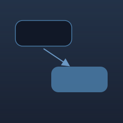

Ideas. Experiments. Curiosity.
The place where I test curiosity through low-code experiments and questions I can't stop thinking about.
-
2023
Completed
Learning Deep Learning Through Malware Detection
Deep Learning for Malware ClassificationExplored how different deep learning architectures perform when classifying malware at scale. I benchmarked CNN, RNN, and other architectures across a 200GB dataset, achieving 95%+ accuracy and learning how representation and data quality affect model performance.
PythonTensorFlowCNNLSTMFNN- Feature engineering matters more than model complexity.
- CNN outperformed baseline models on image-like representations.
- Dataset quality directly impacted generalization.
-
2024
Completed
Can Computer Vision Replace Manual Attendance?
Computer Vision AutomationBuilt a computer-vision attendance system to replace manual classroom attendance, using OpenCV and Django to detect and record students in real time.
PythonOpenCVDjangoSQL- The biggest challenge wasn't detection—it was making the system reliable across different lighting and positioning conditions.
-
2025

In ProgressUnderstanding LLM Reasoning Through Prompt Engineering
LLMs, Prompt Design, ReasoningAn ongoing experiment into how prompt structure changes the quality, consistency, and failure modes of LLM outputs. I test different prompting strategies and evaluate where small changes in instructions meaningfully change outcomes.
PythonLLM APIsPrompt DesignEvaluation- Structure in a prompt often matters more than length.
- Small wording changes can shift reasoning quality significantly.
- Evaluation frameworks matter as much as the prompts themselves.
Currently Exploring
Lately I've been exploring AI agents, product analytics, recommendation systems, and how AI-native products should be designed.